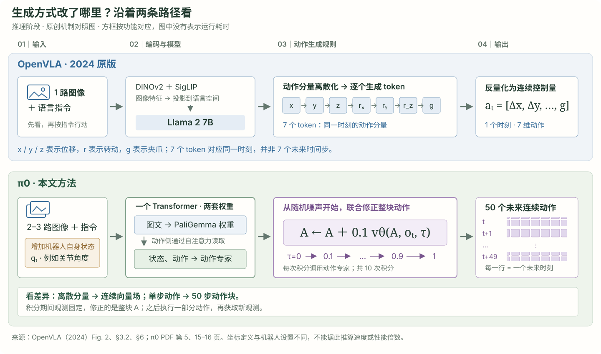
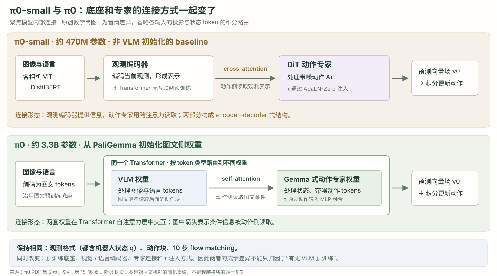

来源：相机与指令图像 It，语言 ℓt
编码后图文 tokens
每台机器人有 2 或 3 路图像。图像编码器把画面映射为向量；文字也以 token 输入。token 在本文是序列位置，可承载连续向量，不等于“一个词”。
下一站 → VLM 权重与自注意力；为动作侧提供条件。精确图像 token 数未在此 PDF 中给出。让看懂世界的模型，
学会连续、灵巧地行动。
π0: A Vision-Language-Action Flow Model
for General Robot Control
Kevin Black 等 · Physical Intelligence
图像与指令提供条件，动作专家生成一段连续动作。
真正的配方，是 VLM 底座、机器人数据与后训练的组合。

论文原图 · Fig. 1。点击可查看大图。先建立一个多任务基础模型，再直接用语言指定任务，或用高质量数据适配更难的任务。
阅读依据：你提供的 17 页 PDF。本文是非官方中文导读；教学图、计算示例与原始实验材料分别标注。
依据：PDF 第 3、5、11 页。参数量是论文近似数；动作数、积分次数与执行频率是三个不同的量。
同一个任务贯穿全文：输入当前画面、叠衣指令和自身状态，生成未来 50 个动作，再执行其中一段。
小块代表同一宽度的向量；先拼成序列，再通过自注意力交换信息。不是把图片叠加，也不是先写文字计划。块数、分词和画面均为示意。
这条 τ 轴没有秒单位；中间候选还不发给机器人。03 拆开算一次 →
50 Hz：0.5 秒；20 Hz：0.8 秒。
依据：PDF 第 5 页，§IV；第 15–16 页，附录 B / D。相机占位、token 块与图形均为教学重建。
理解“把衣袖折进去”和真正把衣袖折好，是两种难度。机器人要在连续的关节空间里处理微小误差、接触变化和多种可行操作方式；还要足够快，不能只输出一个语义上正确的答案。

对照依据：OpenVLA 原论文，Fig. 2、§3.2、§6 输入与动作块限制；π0 PDF 第 5 页，§IV与附录 B–D。
| 已有思想 | 提供了什么 | π0 怎样组合它们 |
|---|---|---|
| 图文预训练 / PaliGemma | 图像与语言表征、语义迁移 | 作为约 3B 的 VLM 初始化 |
| Flow Matching / 扩散式动作生成 | 对连续、多模态动作分布进行建模 | 以向量场损失训练动作输出 |
| Action Chunking | 联合预测未来一段动作 | 每块 H = 50，动作 token 块内双向注意力 |
| 跨机器人数据与后训练 | 共享经验，再针对目标任务精修 | 广泛数据打底，高质量任务数据专门化 |
这项工作的贡献具有整合性：不是只提出一个新的输出头，还一起验证了架构、数据组合与预训练 / 后训练配方。它也不意味着连续输出一定在每个任务、每种数据预算下都胜过其他方法。
依据：PDF 第 3–4 页，§II–III。方法间的比较范围以论文实际实验为准。
π0 的“两个专家”是同一个 Transformer 中的两套权重：图像与语言 token 使用 VLM 权重；机器人状态和带噪动作 token 使用动作专家权重。它们通过自注意力交换信息。

每台机器人有 2 或 3 路图像。图像编码器把画面映射为向量；文字也以 token 输入。token 在本文是序列位置，可承载连续向量，不等于“一个词”。
下一站 → VLM 权重与自注意力；为动作侧提供条件。精确图像 token 数未在此 PDF 中给出。这是机器人当前关节等配置数值，不是模型的“记忆”。不同机器人的配置维度不同；训练时按本文统一接口补零到 18 维，映射到动作专家的隐藏宽度。
下一站 → 动作专家。当前观测固定时，这个 token 不随内部积分 τ 变化。忽略 batch 维，可把填充后的动作块看成 [50, 18] 的数字表：50 行未来动作，每行是该步的动作向量。每行经 MLP 融合 τ 后进入动作专家。
下一站 → 通过块内双向注意力联合处理，投影为同形状向量场 vθ。vθ 表示动作空间中“接下来向哪里改”的向量，不是最终要执行的动作，也不是机器人末端速度的通用物理定义。要先积分，得到 At1。
下一站 → Euler 更新带噪动作。推理改变的是 Aτ，不是重新训练 θ。| 读取方 ↓ / 被读取方 → | 图像＋语言 | 状态 qt | 动作 Aτ |
|---|---|---|---|
| ✓ | — | — | |
| ✓ | ✓ | — | |
| ✓ | ✓ | ✓ |
动作 token 可以读取图文、状态，以及同一个动作块中的全部动作 token。因此不是“先生成 aₜ，再只看过去生成 aₜ₊₁”的逐动作自回归。
附录 B 报告 VLM 隐藏宽度 2048、动作专家宽度 1024，动作专家 MLP 宽度 4096。两套权重只在注意力计算中交互，因此隐藏宽度和 MLP 大小不必一致。不要把不同的输入 / 隐藏维度直接当成可以逐元素相加的对象。

依据：PDF 第 15 页，附录 B：π0 架构；第 16 页，附录 C：π0-small 架构与共有条件。本图为机制重绘。
依据：PDF 第 5–6 页，§IV–V；第 15 页，附录 B。图文 token 数、精确图像分辨率等未披露项不以其他版本代码补齐。
先读训练：已知示范动作，制造带噪输入，教模型预测变化方向。再读推理：没有示范答案，用预测方向一步步更新动作。
为看清运算，只取 50×18 数字表中的一个分量；数值为教学设定，无物理单位，不是原始训练数据。
这个结果是 Aτ，是动作专家的输入；τ 也一起输入。τ 越小，噪声占比越大。
Aτ = ε ＋ τ(Aₜ − ε)，所以对 τ 的导数就是 Aₜ − ε。这对固定样本的标签为 2.00；它不是机器人的物理速度。
误差 → 反向传播 → 更新模型参数 θ。训练在学习预测器，不是在这一步让机器人执行动作。完整动作表会计算各分量的平方范数，再对采样取期望。
当前二维带噪样本：(0.20, 1.10)。与上面的 τ 滑块同步；此图不是机器人末端轨迹。
δ=0.1，累计 10 次更新得到 A¹，再交给机器人。上面的 1.50 是一次假设预测，不能当作十步都不变的常量，也不能据此推断最终动作值。
不是。附录 B 使用偏向较小 τ、即较高噪声的移位 Beta 分布，并在 s = 0.999 以上截断。作者认为，在机器人观测这一强条件下，预测平均动作本身就很难，因此给高噪声阶段更多训练权重。上面的等间距滑块只是帮助读公式，不表示真实训练采样概率。
依据：PDF 第 5 页，§IV 的损失、带噪构造和 Euler 更新式；第 15–16 页，附录 B。所有代入数值和假设模型输出均为教学示例。
从同一条机器人示范里取：一份“现在”的观测 oₜ，配上从该时刻开始的 50 个示范动作 Aₜ。标记与 00 完全相同。
当前输入停在 t；红色标签窗口从 aₜ 到 aₜ₊₄₉。相邻样本可以使用重叠的标签窗口。
PaliGemma 提供初始化；动作专家从随机权重开始。
用多任务、多平台、包含多种操作状态的数据学习基础能力。
用经过筛选的目标任务示范，提升流畅性与可靠性。
根据观测生成动作；不在每次执行时重新训练权重。
| 论文披露项 | 数值 / 设置 | 怎样理解 |
|---|---|---|
| 自有机器人数据 | 903M 时间步，约 10,000 小时示范 | 其中单臂 106M、双臂 797M；不是 903M 条独立轨迹 |
| 任务与机器人配置 | 68 个任务、7 种配置 | 一个“任务”可含多种物体和操作；采用所提供 PDF 的统计 |
| 开源数据 | 训练混合中占 9.1% | 包含 OXE 相关数据、Bridge、DROID；9.1% 是混合口径，不是原始数据占比的简单同义词 |
| 任务—机器人组合重采样 | 权重 ∝ n0.43 | 相对按原始样本数 n 采样，降低过大组合的支配程度 |
| 统一接口 | 状态与动作向量补零到 18 维 | 缺失的图像槽位被 mask；不等于每台机器人有相同关节定义 |
| 语言标注 | 任务名 ＋ 约 2 秒的子轨迹细粒度标注 | 帮助语言对应当前操作阶段；不是要求人机视频逐帧对齐 |
| 基础模型训练步数 | 700K；另有 160K parity 版本 | 160K 是比较用模型，不能误写成所有实验都只训练 160K 步 |
| 目标任务后训练数据 | 任务各异；部分约 5 小时，复杂任务达 100 小时以上 | 另在新任务实验中比较 1 / 5 / 10 小时，口径不同 |


为什么分预训练和后训练？广泛数据让模型见过多种状态，包括纠错与恢复；高质量数据教它用更一致、流畅的策略完成任务。只学“完美示范”可能缺少恢复经验，只学混杂示范又可能不够高效。
这份 PDF 给出了参数量、主模型训练步数和数据规模，但没有完整报告训练 GPU 数量、总耗时、峰值显存、batch size、优化器 / 学习率，以及逐层冻结配置。因此这里标为未报告。正文描述了对 VLM 的机器人控制适配和微调，不能将流程简化为“始终冻结 VLM，只训练动作专家”；也不能把当前公开代码的默认配置直接当成本论文实验配置。
依据：PDF 第 4–7 页，§III、§V、§VI-A，Fig. 4–5；第 9–10 页，§VI-C。网页里的样本窗口是教学重建。
把三个量放在各自的轴上：50 个未来动作、20 / 50 Hz 控制、10 次模型内部积分。
50 Hz：每步 20 ms；预测 1.0 秒，只采用前 0.5 秒，余下计划不继续采用。重预测间隔 0.5 秒，按此换算为约 2 次/秒，并非每秒生成 50 个 chunk。
模型参数 θ 固定，动作候选 Aτ 改变。积分次数没有 Hz 单位。RTX 4090、3 路图像条件下，论文实测整次本机推理约 73 ms：
这是上述硬件条件下的一次计时；不能把 73 ms 直接代入上一张图，假定论文使用某种同步或异步调度。
下面是通用教学设定，不是 π0 的实测调度，也不声称论文使用异步推理。
| 部分 | 论文实测 | 计时条件 / 含义 |
|---|---|---|
| 图像编码器 | 14 ms | 3 路相机图像 |
| 观测前向计算 | 32 ms | 缓存固定观测对应的 attention K/V |
| 动作前向 × 10 | 27 ms | 合计，而不是每步 27 ms |
| 本机总推理 | 73 ms | 14 ＋ 32 ＋ 27；NVIDIA GeForce RTX 4090 |
| 远程通信与总计 | 另加 13 ms → 86 ms | 移动机器人使用异机推理和 Wi-Fi 的条件 |
缓存是什么？同一轮的图像、语言和状态在 10 次积分中不变，相关 K/V 可以重用。它是这一轮生成的计算缓存，不能解释成跨任务积累经验的长期记忆。论文早期尝试 temporal ensembling 后发现效果变差，因此采用不聚合的动作块执行。
依据：PDF 第 16 页，附录 D、Table I。预测时长由 H / Hz 换算，执行窗口直接采用论文设置。
“基础模型直接用”“是否听懂语言”“新任务少量数据适配”“复杂任务后训练”是四种不同实验。多数图的纵轴是归一化任务进度得分，可以给部分完成计分，不能一概读成整次任务成功率。
在预训练任务分布内，用语言命令直接测试，不做该实验对应的后训练。任务包括平铺衬衫折叠、桌面分类、装购物袋与取吐司。每个任务、每种方法平均 10 个 episode。
π0 的完整 700K 版本整体表现最强；160K parity 版本也优于该实验的基线。OpenVLA、Octo 使用同一大数据混合训练，但更新步数并不完全一致；图中专门保留了 parity 对照。
解读边界：这里的 out-of-box 不等于“对任意未见任务零样本通用”。π0-small 还同时改变了参数规模与架构，不能把差距全部归因于 VLM 初始化。

比较只给总任务的 flat、人工给中间指令的 human，以及外部高层 VLM 给子任务的 HL。π0 在语言跟随与任务执行上受益；不使用 VLM 初始化的小模型跟随能力较弱。
外部高层策略负责挑选“拿哪个、放哪里”这类语言子任务；π0 负责把当前语言条件变成动作。这不是 π0 每轮先生成一个文字计划的结构。
解读边界：人工指导条件含额外信息；HL 才是这里的自主高层指导条件。别把 human 的分数当成完全无人干预表现。该组结果也按每任务 10 次试验平均。

叠碗、折毛巾较接近预训练技能；微波炉引入新设备；换纸巾卷、Franka 开抽屉装物更远。比较预训练 π0、目标数据从头训练的 π0，以及任务专用模型等。
预训练通常更有帮助，尤其在接近已有技能或小数据条件下，但并非每个点都严格胜出，也不是数据更多就一定单调提升。OpenVLA / Octo 只在部分任务与数据量上运行。
解读边界：每任务平均 10 次试验，任务差异很大；“只需 1 小时就能学会所有新任务”不是论文结论。

从衣筐取衣、展平折叠、移动洗衣、卸烘干机、清桌、搭纸盒、装鸡蛋和打包食物等任务，要求把多种动作串起来。比较完整配方、只在目标数据上训练，以及预训练后直接用。
完整配方在多数复杂任务上最好，各任务均超过最高可得分的一半；图中装鸡蛋的 scratch 柱仍略高于 fine-tuned，说明优势不是每项都成立。每任务平均 10 次试验。
0.5 分不等于 50% 整次成功率。例如叠衣服按“取出、展平、折好、放成叠”分阶段计分，部分完成也会得到正分。

依据：PDF 第 7–11 页，§VI、Fig. 7 / 9 / 11 / 13；第 17 页，附录 E。图表直接裁取原文，不从柱高估算并伪造精确数据表。
保留官网发布的视频文件，提供本地播放。看动作与观测如何形成闭环，也看执行为什么会失误。演示片段不能代替上一节的统计评估。
怎样看这些片段？先找当前任务目标，再观察机器人如何因场景变化调整动作。官网片源可能有剪辑或加速，“播放器 1×”不自动等于真实机器人时间；不根据视频长度推算任务耗时或成功率。
媒体来源：Physical Intelligence 官方 π0 项目页。四段片源 URL、文件大小与对应说明记录在 SOURCES.md；未重新剪辑或转码。
在本文评估的操作任务中，把 VLM、连续动作生成、大规模机器人预训练和目标任务后训练结合起来，能获得强的基础能力与灵巧操作表现。
任意机器人即插即用、任意任务零样本解决、每次都成功，或部署中会自主学习改进。数据配方、可靠性和更远领域的正迁移仍是开放问题。
这篇 π0 的条件输入是当前图像、语言与自身状态。文中没有 RoboTTT 式跨时间 fast-weight 记忆，也没有部署时根据经验更新模型权重的流程。生成中反复变化的 Aτ 是动作变量；缓存的 K/V 是当前观测的计算结果，都不应被称为逐渐学到的长期经验。
本文训练样本来自机器人数据中的观测与动作。它讨论了从互联网图文预训练迁移语义知识，没有提供“人手动作自动重定向为任意机械臂控制”的方法或此类实验。跨机器人补零接口也不等于人机动作空间几何对齐。
补零统一的是数值接口。真实关节的定义、控制方式、相机、状态规范和对应示范数据仍然重要；本文没有证明对未适配硬件仅靠补零就能直接控制。
一些任务通过专门后训练由 π0 执行，一些语义复杂任务受益于外部高层语言策略。论文明确研究了这两种条件，因此不能把所有视频都理解为完全相同的“单模型、同指令、无额外指导”设置。
没有。§VII 指出，哪类数据更有效、如何分配权重、要多少数据才能接近完美，仍不清楚；更远任务和机器人间的正迁移程度也有待研究。不能把“多样化数据通常有益”变成“不论什么数据都越多越好”。
依据：PDF 第 5–6 页，§IV–V；第 11–12 页，§VII；附录 D。与 RoboTTT 的比较仅用于澄清这篇论文的输入与更新对象。
所有页码均指你提供 PDF 的文件页序号。该文件共 17 页，未在正文显式标注 arXiv 修订号；本导读不凭文件创建日期推断发表日期。原始工作官网发布于 2024 年 10 月 31 日。官网介绍出现“8 个机器人”，此 PDF 采用“7 种配置”；网页数据按 PDF 为准。§III 对 OXE 范围的概述与 Fig. 4 的子集说明不完全一致，本文保留 Fig. 4 / §V 的细化数据口径。
原图裁取自用户提供 PDF；中文机制图、二维插值和采样窗口是教学重建；视频来自官方项目页。论文、原图与媒体归原作者和相应权利人。本页不声称是官方翻译或当前最新代码规格。